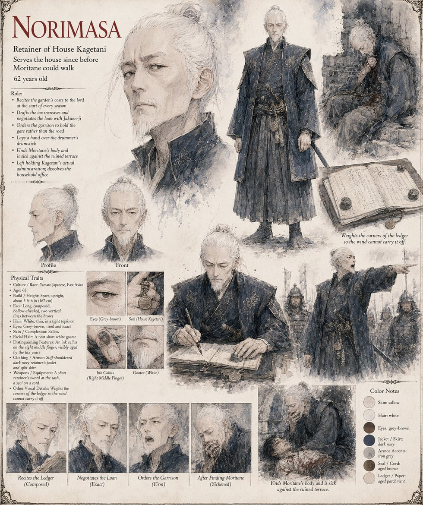

Norimasa
Retainer of House Kagetani · serves the house since before Moritane could walk · reciter of the garden’s costs · 62 by his sheet
A retainer whose entire office is telling his lord things his lord does not wish to hear. At the start of every season he recites the garden’s costs to Moritane, with the ledger laid across the writing table and its corners weighted so the wind cannot carry it off, and every season something interrupts him: plum wine, the news of spawning koi, a dish of persimmons set down by Sadatomo. When the garden’s bills outrun the domain he is the one who drafts the tax increases and negotiates the loan with Jakuen-ji, whose lending is run by Ennen. The book’s own line for the tax is It was signed. Filed. Forgotten by everyone whose forgetting cost them nothing.
When the column comes to the gate he orders the garrison to hold the gate rather than the road, and when the drummer goes on beating the evening drum after it has stopped meaning anything, he lays a hand over the drumstick. He is the one who finds Moritane’s body and is sick against the ruined terrace. He is left holding Kagetani’s actual administration and dissolves the household office; when the overlord’s magistrate arrives, he confirms Norimasa in the administration he already holds. The package’s fifth title option, The Hand That Signs, takes the tenants’ saying that the hand that signs must answer, spoken by Genzo in the ruin of the archive and, it says, echoed in what becomes of Norimasa.
The manuscript gives his aging and his ledger habit and no more; the age of 62 and everything else visual are the sheet’s. It draws him spare and upright at about 5 ft 6 in, with a long composed hollow-cheeked face and two vertical lines between the brows, thin white hair in a tight topknot and a short white goatee, grey-brown eyes that are tired and exact, an ink callus on the right middle finger, a stiff-shouldered dark navy jacket and split skirt, a short retainer’s sword and a seal on an aged-bronze cord. Its panels are Recites the Ledger (composed), Negotiates the Loan (exact), Orders the Garrison (firm) and After Finding Moritane (sickened), and its scenes show the weighted ledger, his arm out toward a line of armoured men, and the moment he finds the body.